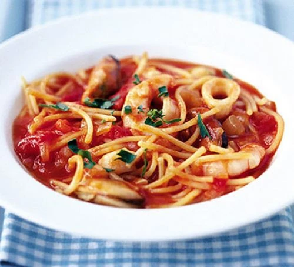

Seafood Linguine

Desription
This speedy seafood pasta is ready in just 20 minutes. A satisfying, low-fat recipe which makes the most of frozen seafood and chopped tomatoes
Ingredients
- 1 tbsp olive oil
- 1 onion
- 1 garlic clove
- 1 tbsp paprika
- 400g can chooped tomatoes
- 1L chicken stock
- 300g linguine
- 240g frozen seafood mix
- Handful of Parsley leaves
Steps
- Heat the oil in a wok or large frying pan, then cook the onion and garlic over a medium heat for 5 mins until soft. Add the paprika, tomatoes and stock, then bring to the boil.
- Turn down the heat to a simmer, stir in the pasta and cook for 7 mins, stirring occasionally to stop the pasta from sticking. Stir in the seafood, cook for 3 mins more until it’s all heated through and the pasta is cooked, then season to taste. Sprinkle with the parsley and serve with lemon wedges.